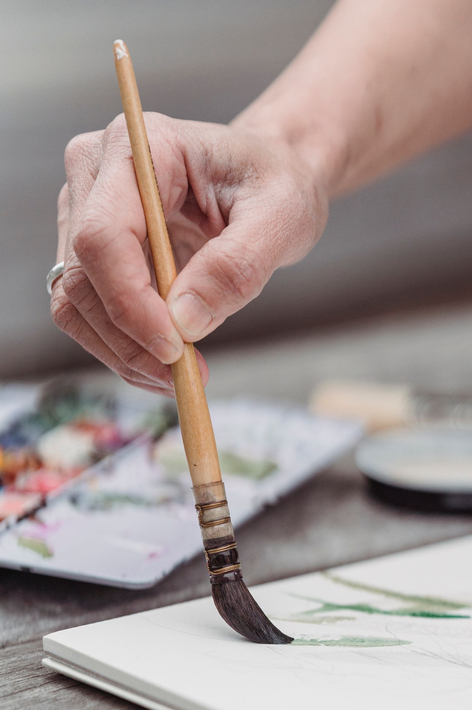

The Falconer at First Light
- Size
- 21 × 30 cm, on wasli
- Pigment
- Lapis, malachite, gold details
- Price
- ₹67,000
Lucknow · Wasli paper · Stone pigment · One hair at a time
I paint Mughal miniatures in Lucknow — wasli paper, pigments ground from stone, gold beaten thin as breath. Every November I carry my year's folios to the Lucknow Mahotsav and pin them in a row inside a painted margin; by the third evening, the row has gaps. Miniatures are small on purpose. A durbar, a monsoon, a wedding — each one fits in two palms, and asks you to come close.
Visitors bring a magnifying glass to my table, and I never stop them. But understand — the glass is for you. Every eyelash on this page was painted with the naked eye. The hand never needed the lens; it needed twenty years.



Photographs above show stages of the work — a wash going down, a drawing being inked — not the finished folios. A miniature is best met in person, at reading distance, the way it was painted.
Sheets of handmade paper are pasted one over another with starch, then burnished with a smooth agate stone until the surface takes a polish and stops drinking the paint. A good wasli takes two days before a line is drawn on it.
The composition is drawn in charcoal, corrected, then inked with a fine pen. Faces are left for last; a face painted too early has to be lived with for weeks.
Flat washes of ground pigment go down in order — sky, ground, architecture, cloth. Each wash must dry fully; impatience shows as a tide mark that no detail can hide.
Pattern, jewellery, leaves, eyelashes — the slow weeks. Gold is laid as leaf or ground into paint with gum arabic, then burnished with an agate until it holds light.
The margin is painted last and is part of the work, not a frame for it: a flowering vine, a plain ruled band of gold, room for the eye to rest before it travels in.
Portraits, wedding scenes, a page for a book, a copy of a family folio that is falling apart. The planner below works from the same rate tables I quote from in the studio — they are printed here in full, and the planner reads them, not a hidden price list.
| Format | Size | Base | Weeks |
|---|---|---|---|
| Postcard folio | 10 × 15 cm | ₹18,000 | 2 |
| Small folio | 15 × 21 cm | ₹32,000 | 3 |
| Standard folio | 21 × 30 cm | ₹58,000 | 5 |
| Court folio | 30 × 42 cm | ₹95,000 | 8 |
| Addition | Price | Weeks |
|---|---|---|
| Each figure beyond the first two | ₹6,500 | +1 per two |
| No gold | — | — |
| Gold details — jewellery, halos, border motifs | ₹9,000 | +1 |
| Gold ground — a full burnished gold sky | ₹24,000 | +2 |
Half now, half when the folio is in your hands. The painting time runs from the week the drawing is approved — I send the tarh first, always.
“She painted our baraat from phone photographs and my grandmother's memory — eleven people, one elephant, and my father's exact expression when the garland went wrong. It took fourteen weeks. My mother has already decided which wall, and which grandchild.”
| Workshop | What happens | Fee |
|---|---|---|
| Pigment-grinding Saturday | Three hours. Grind malachite and ochre, bind with gum arabic, paint a leaf study to take home. | ₹2,500 |
| Brush-making morning | Two hours. Sort, tie and set a squirrel-hair brush — the brush you make is the brush you keep. | ₹1,800 |
| The six-week folio | Six Saturday mornings. Wasli to finished border: one small folio, painted properly, start to end. | ₹24,000 |